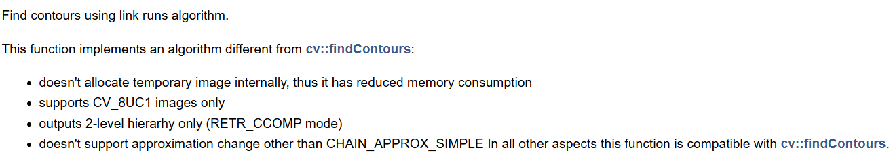
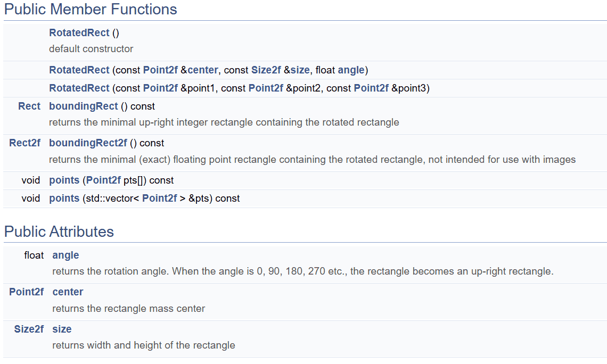
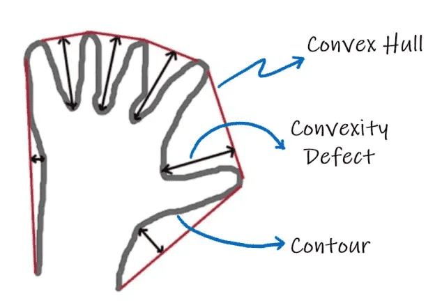

二维几何和轮廓
来自本人笔记: https://github.com/masterAllen/LearnOpenCV/blob/main/docs/1.8.md
函数说明：
最重要的是记住，这里的函数基本都是纵坐标在前、横坐标在后！！
基础函数：寻找轮廓、近似轮廓；OpenCV 本身的文档就很不错：链接
- findContours：用法在 find_contours.ipynb 文件中
- findContoursLinksRuns：另一种寻找轮廓的方法，相对更省内存，但是也有一些限制，见下面说明
- applyProxDP：把密集的轮廓（即轮廓上有许多点）近似为较小的点，用法在 dealwith_points.ipynb
处理一堆点时的函数：在 dealwith_points.ipynb 文件中有详细使用
- 要求点集必须是轮廓:
| 功能 | 函数名称 |
|---|---|
| 轮廓周长 | arcLength |
| 轮廓面积 | contourArea |
| 轮廓的矩 | moment, HuMoment |
| 检测轮廓是否是凸集 | isContourConvex |
| 判断某个点是否在轮廓以内 | pointPolygonTest(measureDist=False) |
| 判断某个点到轮廓的距离 | pointPolygonTest(measureDist=True) |
- 点集不一定构成轮廓（当然如果是轮廓也能用）:
| 功能 | 函数名称 |
|---|---|
| 包围点集的最小矩形（正方向） | boundingRect |
| 包围点集的最小矩形（任意方向） | minAreaRect + boxPoints |
| 包围点集的凸包 | convexHull |
| 包围点集的椭圆 | fitEllipse, fitEllipseAMS, fitEllipseDirect |
| 包围点集的圆 | minEnclosingCircle |
| 点集模拟的线 | fitLine |
- 处理两个轮廓:
| 功能 | 函数名称 |
|---|---|
| 寻找两个轮廓的交集（必须是凸多边形） | intersectConvexConvex |
| 寻找两个矩形的交集（和上面的区别见具体细节） | rotatedRectangleIntersection |
- 匹配和变换两个轮廓，具体请查阅 1.8节的记录：
| 功能 | 函数名称 |
|---|---|
| 比较两个轮廓一 | matchShapes |
| 比较两个轮廓二 | ShapeDistanceExtractor |
| 比较两个轮廓三 | HistogramCostExtractor |
| 变换轮廓 | ShapeTransformer |
其他杂项：
- convextiyDefects: 凸包缺陷检测
- connectedComponents, connectComponentsWithStats: 连通域相关的函数
具体细节
大部分函数的实现都在 find_contours 和 dealwith_points.ipynb 文件中，没有的也都是很简单纯粹的函数，下面是几个还需要再讲讲的函数。
findContoursLinksRuns
官方文档写的就不错，而且这个函数不用啥参数，直接就是一张图片就行：

moments, HuMoments
什么是 moments，这篇文章 和 这篇文章 讲的非常不错，用法也直接参考第一篇文章就行。
简单而言，moments 叫做矩，两个作用：可以用来求轮廓质心、求 HuMoments；而 HuMoments 则是图像的 Hu 不变矩，是指目标具有旋转、缩放不变性，即目标的 Hu 不变矩不会随其大小、方向变化而变化。
RotatedRect 类型

Python 中默认把函数返回的 RotatedRect 类型作为 tuple，而有时需要利用 RotatedRect 的方法。返回的方式为 (center, size, angle)，所以只要用构造方法即可:
# 获取 rotatedRect 的点
point_set = np.array([[20, 20], [20, 13], [28, 19], [33, 18], [17, 31]])
rect1 = cv2.minAreaRect(point_set)
points1 = cv2.RotatedRect(*rect1).points()
rotateRectangleIntersection
和 intersectConvexConvex 的区别就在于，rotate 输入的是 RotatedRect 类型，intersect 输入的是轮廓。如果两个都是 rotatedRect，那就用前者；否则就用后面。
convextiyDefect
凸包缺陷检测，即传入轮廓和凸包，得到凸包和轮廓之间的间隙，参考这篇文章，写的极好，他的图片介绍也很好：

connectedComponents
这篇文章写的极好，本身函数没有太大的坑点，只要知道这是负责得到图片的各个连通域的。后续可以用这些连通域进行分割等操作。